Fundamental Graphs and Visual Encoding
CS-GY 6313 - Information Visualization - Fall 2026
NYU Tandon School of Engineering
2026-09-18
Today’s Agenda
Learning Objectives:
- Master the five fundamental graph types and when to use them
- Apply expressiveness and effectiveness principles
- Understand visual encoding theory (marks and channels)
- Make informed chart selection decisions
- Design effective scales and axes
Acknowledgments
Special thanks to:
Prof. Enrico Bertini NYU Tandon School of Engineering
- Course materials and pedagogical insights
- Visualization design principles
- Interactive visualization expertise
Prof. Jeff Heer University of Washington
- Fundamental visualization theory
- Perceptual effectiveness research
- Vega-Lite and D3.js frameworks
This course builds upon their foundational contributions to visualization education and research.
The Chart Selection Challenge
The central question: Given data and a task, which visualization technique will be most effective?
- Chart type (bar, line, scatter, etc.)
- Visual encoding (position, color, size)
- Design choices (scales, axes, layout)
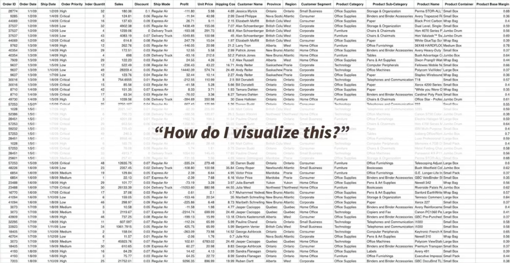
Two-Step Process
- Step1: Decide what to visualize.
- Tipically, data is represented in a table and you must SELECT attributes to create your visualization
- The selected attributes can also be TRANSFORMED in order to generated useful information to answer the question
- Step2: Choose/Design your visualization.
- Your visualization can be selected from a set of existing visualizations
- Based on well-defined principles, a novel visualization can be designed to answer the question
Data Types Drive Design
Understanding your data:
- Categorical (nominal, ordinal)
- Quantitative (continuous, discrete)
- Temporal (time-based ordering)
- Spatial (geographic coordinates)
The type determines suitable encodings
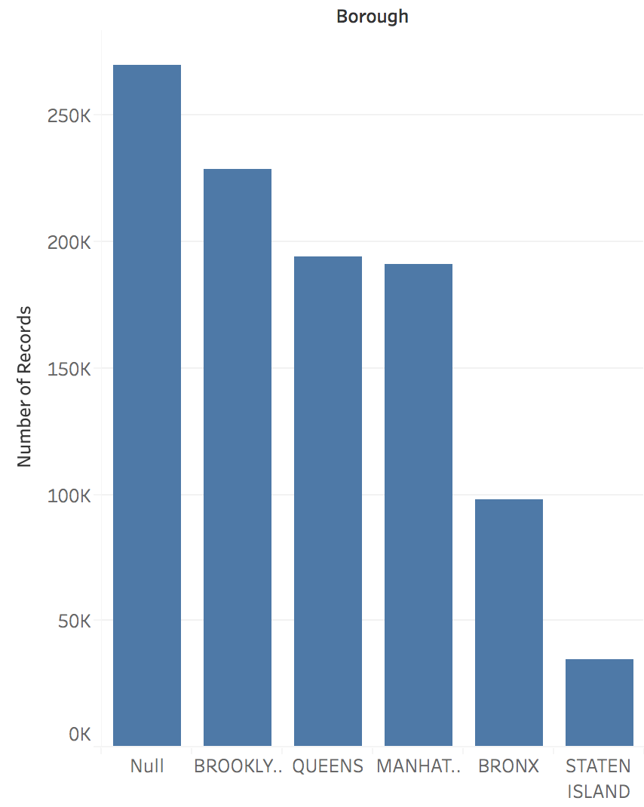
Same Data, Multiple Options
Design decisions:
- Which visual channels best represent your data?
- How do you map data attributes to visual properties?
- What design choices enhance clarity?
- How do you avoid misleading representations?
Chart selection: The attribute types can guide the chart selection!
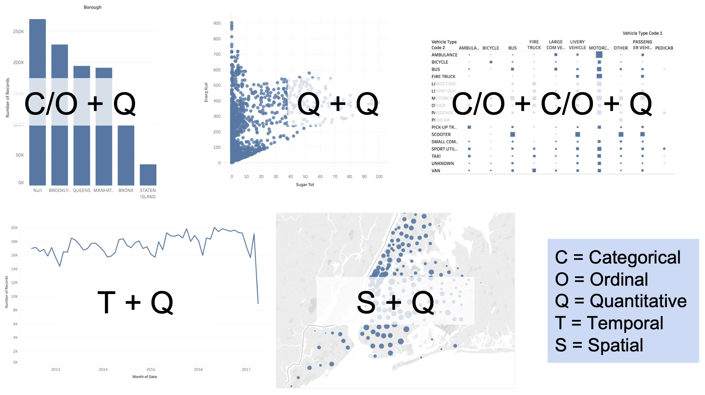
The Five Fundamental Graphs
Bar Chart:
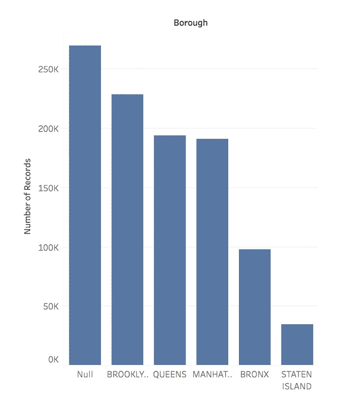
Line Chart:
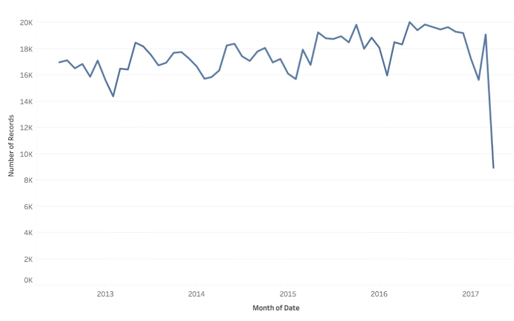
Scatterplot:
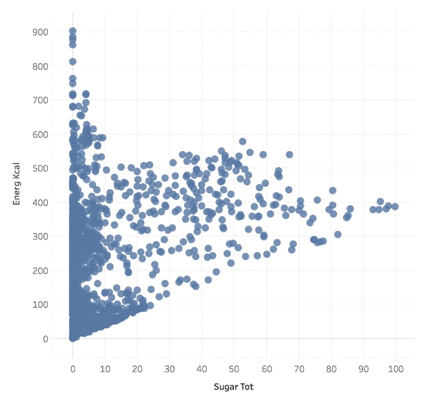
Matrix Chart:
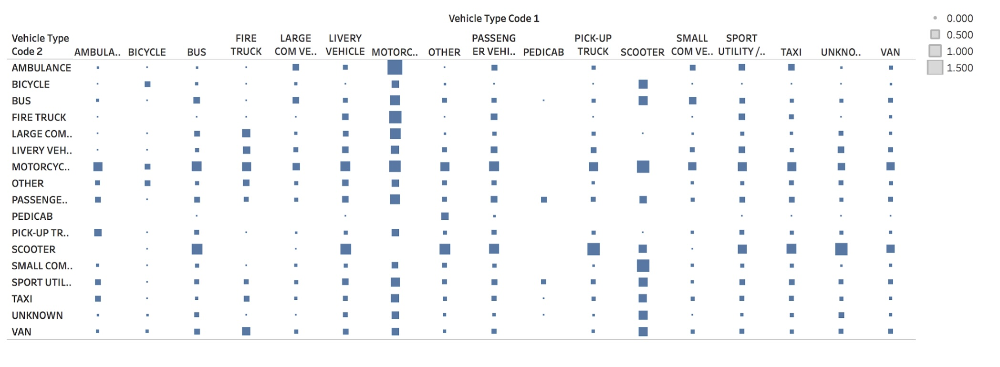
Symbol Map:
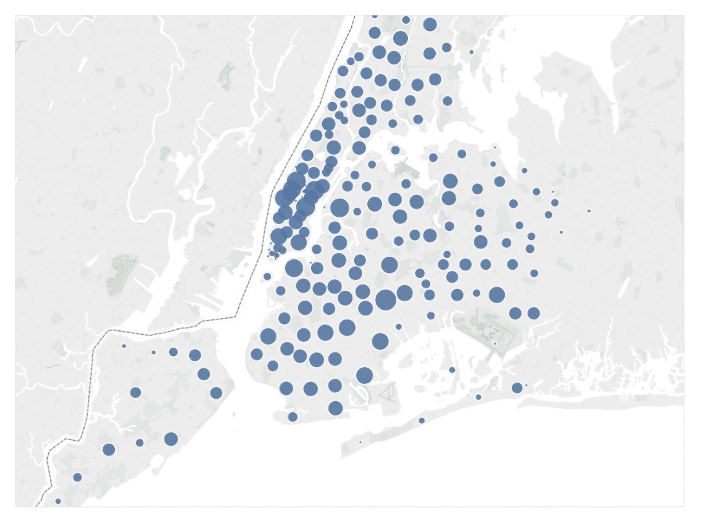
Bar Chart: Categorical Comparisons
Purpose: Compare quantities across categories
Data Types:
- Categorical/Ordinal + Quantitative
- Example: Sales by product category
Best For:
- Rankings and comparisons
- Part-to-whole relationships
Key principle: Our visual system excels at comparing lengths along a common baseline.
Line Chart: Trends Over Time
Purpose: Show trends and changes over time
Data Types:
- Temporal + Quantitative
- Example: Stock prices over months
Best For:
- Trends and patterns
- Multiple series comparison
Key principle: Connecting lines imply continuity - use only for ordered data.
Scatter Plot: Relationships
Purpose: Explore relationships between variables
Data Types:
- Quantitative + Quantitative
- Example: Height vs. weight
Best For:
- Correlation analysis
- Outlier detection
- Pattern recognition
Key principle: Reveals relationships that summary statistics might miss.
Matrix (Heatmap): Two-Way Comparisons
Purpose: Compare across two categorical dimensions
Data Types:
- Categorical + Categorical + Quantitative
- Example: Sales by month and region
Best For:
- Cross-tabulations
- Correlation matrices
- Dense data display
Key principle: Color encoding allows rapid processing of many values.
Symbol Map: Spatial Distribution
Purpose: Show spatial distribution of data
Data Types:
- Spatial coordinates + Quantitative
- Example: Population by city
Best For:
- Geographic patterns
- Location-based analysis
- Spatial clustering
Alternate representations
Question: Is it possible to create different representations of the same data?
It is. However, some representations might not follow the best design guidelines
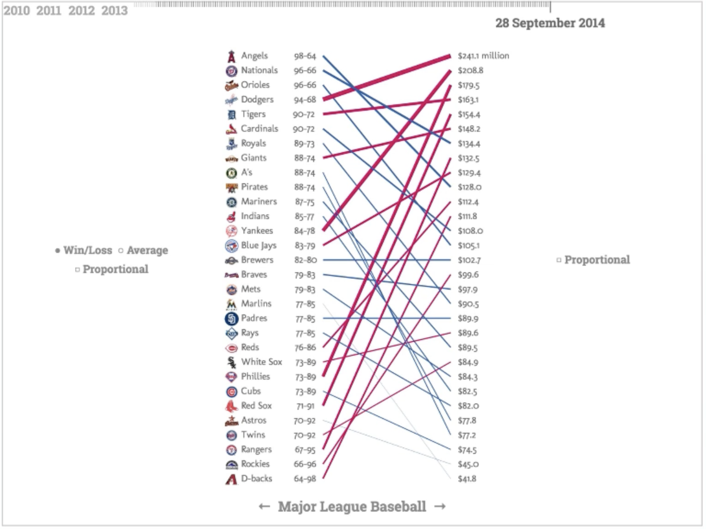
Chart Selection Examples
Scenario 1: Monthly sales data for different product categories
Answer: Line chart (multiple series) - shows trends over time by category
Scenario 2: Customer satisfaction ratings across departments
Answer: Bar chart - compares quantitative values across categories
Scenario 3: Relationship between advertising spend and sales revenue
Answer: Scatter plot - explores correlation between two quantitative variables
Decomposing a chart: Marks and Channels
Marks are the geometric primitives we use in a visualization. They are used to represent the items of a dataset.
Decomposing a chart: Marks and Channels
Channels:
- Channels are the appearance of the marks
- They are used to represent the attributes of a dataset
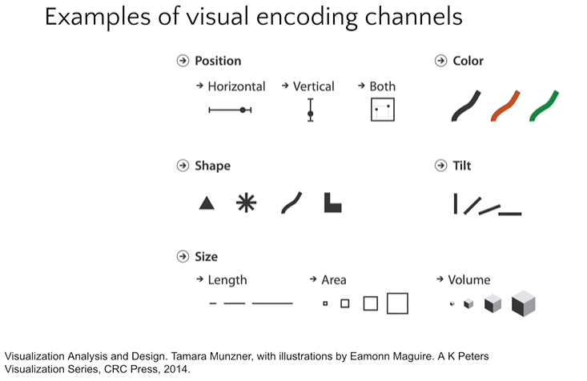
Principles: Expressiveness & Effectiveness
Expressiveness: The visual encodings must show all and only the facts in the data.
- The most fundamental expression of this principle is that ordered data should be shown in a way that our perceptual system intrinsically senses as ordered. Conversely, unordered data should not be shown in a way that perceptually implies an ordering that does not exist. Violating this principle is a common beginner’s mistake in visualization.
Effectiveness: Information should be readily perceived
- The importance of the attribute should match the salience of the channel; that is, its noticeability. In other words, the most important attributes should be encoded with the most effective channels in order to be most noticeable, and then decreasingly important attributes can be matched with less effective channels.
Expressiveness Violations
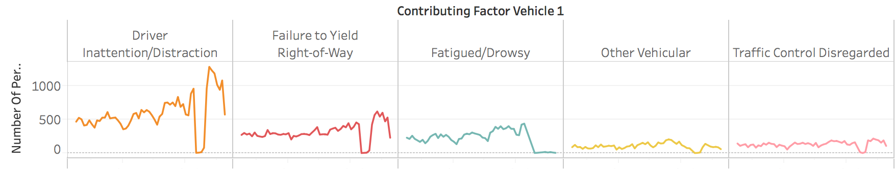
Problem: The line asserts continuity — and values — where the data is absent
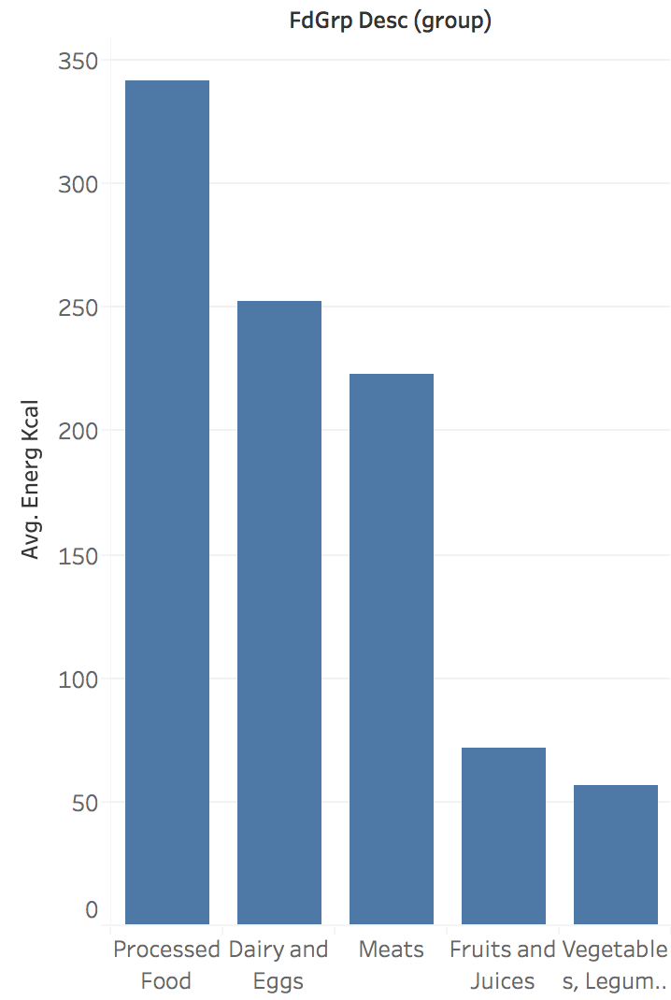
Problem: Arbitrary ordering implies non-existent relationship
Effectiveness: A Quick Experiment
Which value is larger?

Effectiveness: A Quick Experiment
Which value is larger?

Result: Position on a common baseline is judged more accurately than length
Channel Effectiveness Rankings
Use the most effective channel for your most important data
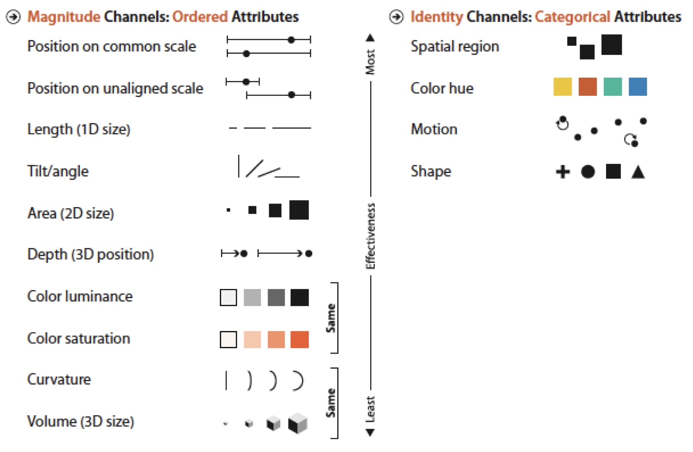
Applying Channel Rankings
More Effective:
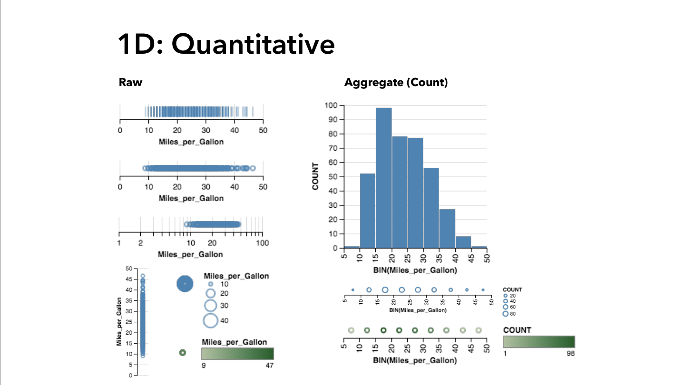
Position encoding enables accurate comparison
Less Effective:
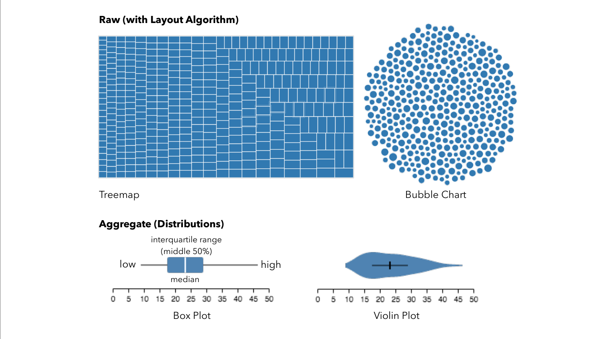
Area and angle are harder to compare accurately
Exercise
What are the marks?
- Bars
What are the channels?
- Size
- Horizontal position
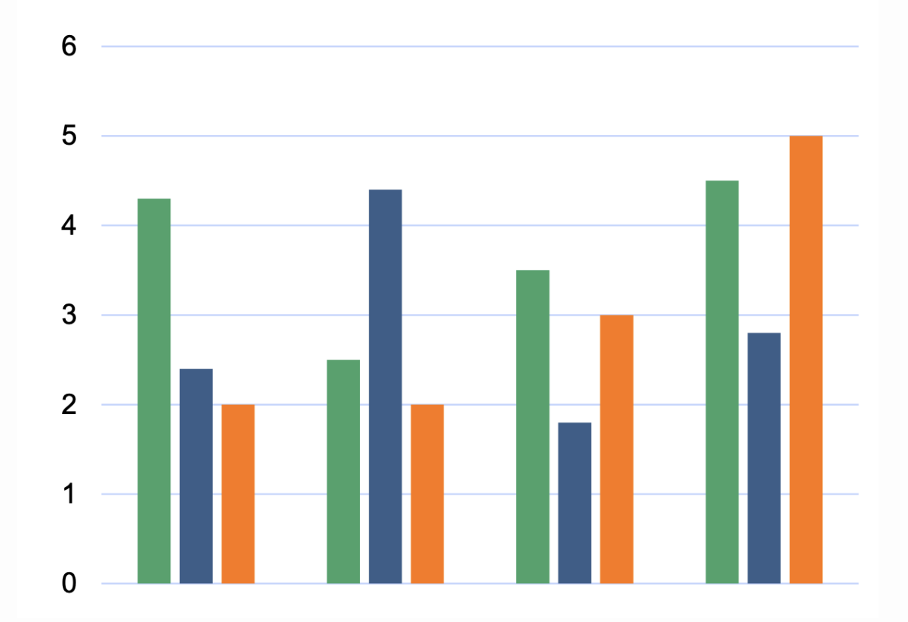
Chart Selection Framework
How do you choose the right chart?
Ask these questions:
- What data types do I have?
- Categorical vs. Quantitative
- Temporal vs. Non-temporal
- What relationship am I showing?
- Comparison, trend, correlation, distribution, composition
- How many variables?
- 1D, 2D, 3D, multidimensional
Decision Tree:
- Compare categories → Bar Chart
- Show trends over time → Line Chart
- Explore relationships → Scatter Plot
- Cross-tabulate → Matrix/Heatmap
- Show geographic distribution → Symbol Map
Rule of thumb: Start simple, add complexity only when needed
Scales and Axes: The Foundation
Scale: A function mapping data domain to visual range
Data Domain → Scale Function → Visual Range
- Linear scales: Equal data differences = equal visual differences
- Logarithmic scales: Equal ratios = equal visual differences
- Ordinal scales: Preserve order, not magnitude
Linear vs. Logarithmic Scales
Choose scales based on whether absolute or relative change matters more.
Linear Scale:
- Absolute differences
- Additive changes
- Most common choice
- Large values dominate visually
Logarithmic Scale:
- Relative differences (%)
- Multiplicative changes
- Wide data ranges
- Equal growth rates appear as straight line
The Zero Baseline Rule
Bar charts encode data as length. Truncating the axis changes the ratios readers perceive.
Key insight: On the left, the fastball bar appears ~7× longer than the curveball. In reality, it’s only 20% faster.
When to Break the Rules
Context determines when breaking rules is acceptable. Understand the “why” before breaking them.
When to break zero baseline:
- Line charts (position, not length)
- Small changes in large values
- When trend matters more than magnitude
- Medical vitals, temperatures, etc.
When to use log scales:
- Data spans orders of magnitude
- Ratios matter more than absolute values
- Exponential growth patterns
- Never for bar charts!
Design Exercise: Scale Choices
Scenario: Visualizing country populations
Data range: 1,000 (Vatican) to 1.4 billion (China)
Questions:
- What scale would you choose?
- How would you handle the extreme range?
- What alternatives might you consider?
Consider: Log scale vs. filtering vs. grouping
Putting It All Together
The Visualization Design Process:
- Understand your question
- Transform data appropriately
- Choose effective visual encodings
- Select appropriate scales
- Test and iterate
Workflow: Question → Transform → Encode → Scale → Iterate
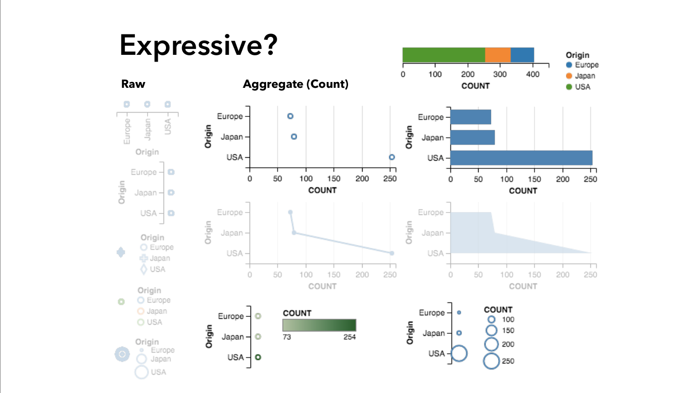
One Dataset, Four Fundamental Graphs
The same 495 pitches as a bar chart (mix), box plots (velocity), and two scatterplots (movement, location).
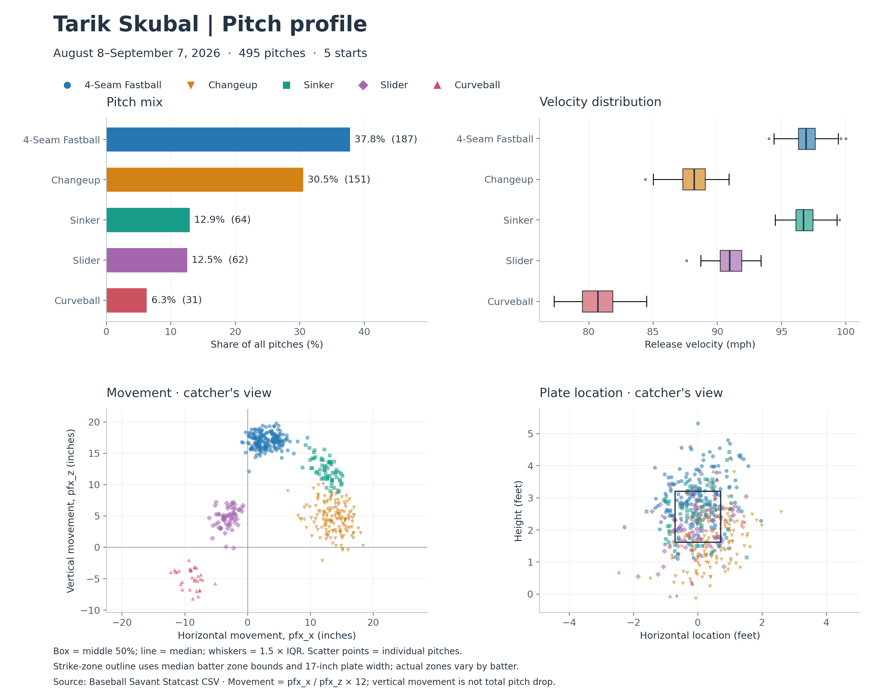
Source: Baseball Savant Statcast, Tarik Skubal, Aug 10 - Sep 3 2026, 495 pitches. Figure: baseball-vis pitch profile.
Small Multiples: One Panel per Category
Same axes, same scale, one panel per pitch type - the comparison happens across panels, by eye.
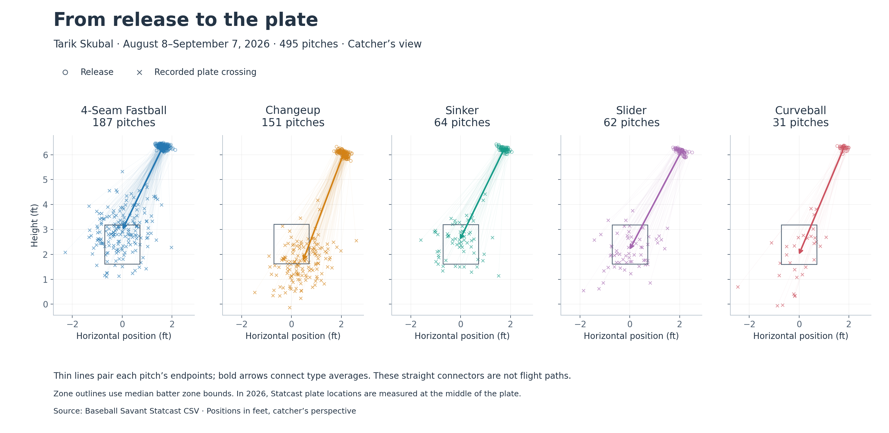
Source: Baseball Savant Statcast, Tarik Skubal, Aug 10 - Sep 3 2026, 495 pitches. Figure: baseball-vis, release point to plate crossing, catcher’s view.
Common Pitfalls to Avoid
- Skipping data exploration: Visualize without understanding the data
- Chart junk: Adding visual elements that don’t encode information
- Color overuse: Using color when position would be more effective
- Ignoring scale effects: Not considering how scale choices affect perception
- 3D when 2D suffices: Adding dimensions that don’t encode information
Specific Pitfalls to Avoid: Overplotting
After Nathan Yau’s FlowingData illustration; redrawn in D3 with a seeded Gaussian sample.
Specific Pitfalls to Avoid: Missing Labels
After Nathan Yau’s FlowingData illustration; redrawn in D3.
Chart decoding
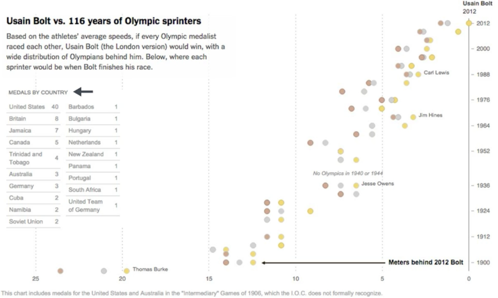
Best Practices Summary
Expressiveness: Match visual properties to data properties
Effectiveness: Use the most effective encoding for your most important data
Transformation: Prepare data to answer your specific questions
Scales: Choose scales that honestly represent relationships
Iteration: Test your designs with real users when possible
Interactive Quiz
Question 1: For comparing sales across product categories, which encoding is most effective?
- Color saturation
- Bar length
- Symbol size
- Line style
Answer: B) Bar length (position along common scale)
Why? Position is the most effective visual channel for quantitative comparison.
Interactive Quiz
Question 2: You have website traffic data spanning 5 years. For showing long-term growth trends, you should:
- Use a zero baseline always
- Use a log scale if growth is exponential
- Show only the most recent year
- Use a pie chart for each year
Answer: B) Use a log scale if growth is exponential
Why? Log scales reveal multiplicative relationships and growth rates.
Next Steps
For next class (Sept 25 - Visual Perception and D3 Foundations):
- Read Franconeri et al., The Science of Visual Data Communication: What Works (2021)
- Read Elliott, 39 Studies About Human Perception in 30 Minutes
- Read Cleveland & McGill (1984), Graphical Perception - the paper behind today’s experiment
- Practice chart selection with your own datasets
- Complete Exercise 3: Chart design and encoding alternatives (due Sept 24)
Lab activities:
- Build all five chart types with real data
- Compare encoding choices for the same dataset
- Apply the chart selection framework to new scenarios
Looking ahead:
- Weeks 4-5: perception and colour - why the channel ranking looks the way it does
- Week 6: group projects
- Week 7: interaction
Key Takeaways
- Five fundamental charts are your visualization toolkit
- Data types determine appropriate chart selection
- Visual encoding theory provides systematic design principles
- Effectiveness rankings guide channel choices
- Scale and axis design dramatically affects perception
Questions & Discussion
Think about:
- What visualization challenges do you face in your work/research?
- How might these principles apply to your domain?
- What questions do you have about applying these techniques?
Next class (Sept 25): Visual perception and D3 foundations